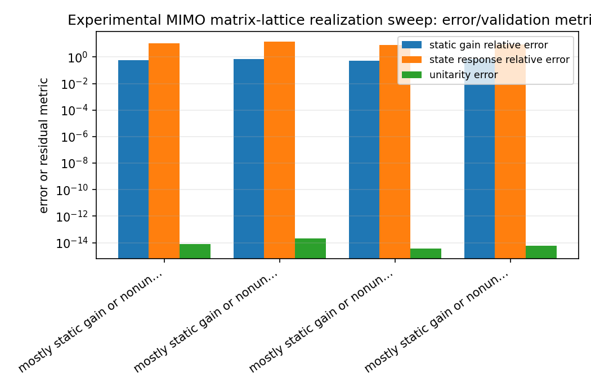
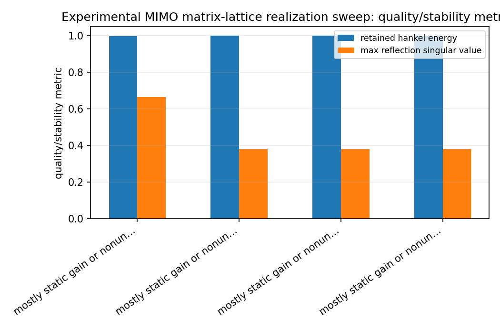
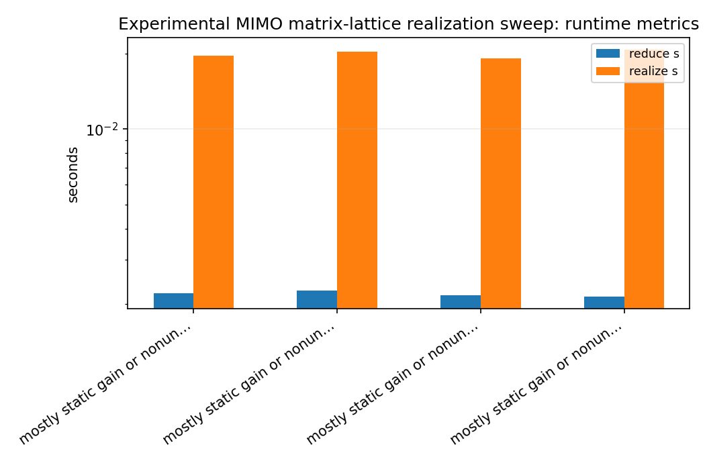
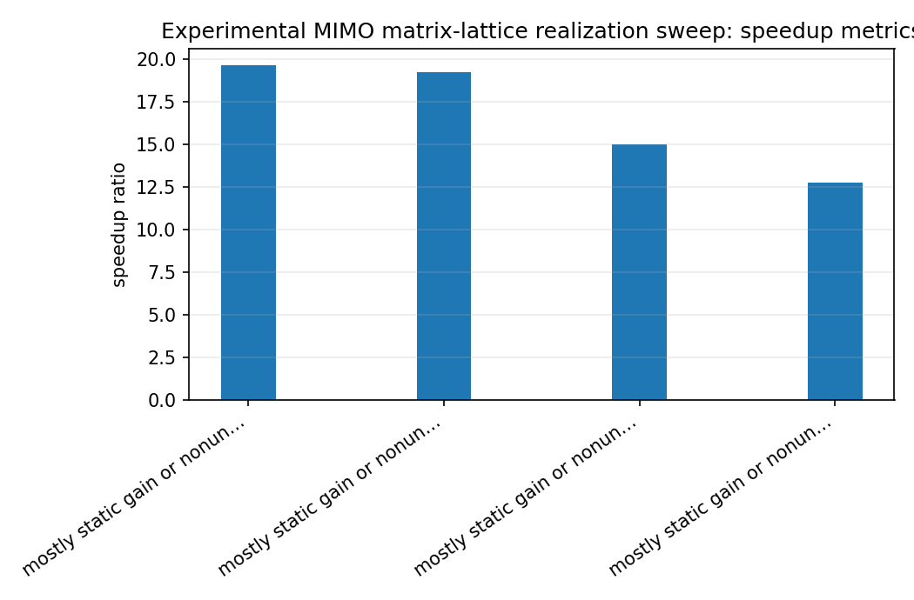

Experimental MIMO matrix-lattice realization sweep¶
Tutorial goal
Sweep reduced and lattice orders for the experimental all-pass/polar matrix-lattice scaffold.
Note
New to the terminology? See the lattice DSP concept map and the causality/data-use guide for how online, offline, block, and MIMO examples should be read.
Context¶
The experimental state-space to matrix-lattice helper returns an all-pass scaffold, not a full dynamic gain realization. This benchmark runs that helper over a small grid of reduced MIMO orders and lattice orders, then reports polar-factor error, raw state-response error, static-gain-compensated error, gain conditioning, unitarity, and a diagnostic classification.
This makes the current matrix-lattice realization story measurable: good all-pass fits, mostly static-gain mismatch, and poor lattice-scaffold fits are separated explicitly.
Key idea and equations¶
Static gain compensation fits
The improvement ratio is
How to read the result¶
Look for unitary lattice responses, stable reduced states, lower static-gain-compensated error than raw state-response error, and classifications that explain whether the mismatch is all-pass, static-gain, or scaffold-driven.
Run command¶
python benchmarks/experimental_mimo_matrix_lattice_realization_sweep.py --full-order 12 --reduced-orders 4 6 --lattice-orders 2 4 --channels 3 --n-markov 128 --n-freq 128 --block-rows 20 --block-cols 20 --candidate-gains 0.20 0.40 0.60 0.80 --static-gain-iterations 10 --repeats 1 --n-threads 1 --output docs/benchmarks/generated/_artifacts/experimental_mimo_matrix_lattice_realization_sweep/experimental-mimo-matrix-lattice-realization-sweep.json
Run status¶
Return code: 0
Visual and data readout¶
When the benchmark gallery is built with results, this page embeds PNG summaries generated from the same JSON/CSV artifacts. The raw data stay available below as downloads so exact numbers remain reproducible without making the public page read like console output.
Figures¶
{kind=link}

experimental_mimo_matrix_lattice_realization_sweep_error_summary.png¶
{kind=link}

experimental_mimo_matrix_lattice_realization_sweep_quality_summary.png¶
{kind=link}

experimental_mimo_matrix_lattice_realization_sweep_runtime_summary.png¶
{kind=link}

experimental_mimo_matrix_lattice_realization_sweep_speedup_summary.png¶
Generated data files¶
Source code¶
1"""Benchmark experimental MIMO state-space to matrix-lattice realization diagnostics."""
2
3from __future__ import annotations
4
5import argparse
6import csv
7import json
8import platform
9import statistics
10import sys
11import time
12from pathlib import Path
13from collections.abc import Iterable
14
15# When this benchmark is executed as ``python benchmarks/<script>.py``,
16# Python puts ``benchmarks/`` on sys.path rather than the repository root.
17# Prefer the checked-out source tree over any older installed lattice-dsp.
18_REPO_ROOT = Path(__file__).resolve().parents[1]
19if str(_REPO_ROOT) not in sys.path:
20 sys.path.insert(0, str(_REPO_ROOT))
21
22import numpy as np # noqa: E402
23
24import lattice_dsp as ld # noqa: E402
25
26
27def coupled_state_space(order: int, channels: int, seed: int) -> tuple[np.ndarray, np.ndarray, np.ndarray, np.ndarray]:
28 """Create a deterministic stable square coupled MIMO state-space model."""
29
30 if order <= 0:
31 raise ValueError("order must be positive")
32 if channels <= 0:
33 raise ValueError("channels must be positive")
34 rng = np.random.default_rng(seed)
35 q, _ = np.linalg.qr(rng.normal(size=(order, order)))
36 radii = np.linspace(0.30, 0.90, order)
37 A = q @ np.diag(radii) @ np.linalg.inv(q)
38 mix_in = rng.normal(size=(order, channels))
39 mix_out = rng.normal(size=(channels, order))
40 B = 0.35 * mix_in / np.sqrt(order)
41 C = 0.35 * mix_out / np.sqrt(order)
42 direct = rng.normal(size=(channels, channels))
43 D = 0.08 * direct / max(np.linalg.norm(direct, ord=2), 1e-12)
44 return A.astype(float), B.astype(float), C.astype(float), D.astype(float)
45
46
47def state_spectral_radius(A: np.ndarray) -> float:
48 eigvals = np.linalg.eigvals(np.asarray(A, dtype=float))
49 return float(np.max(np.abs(eigvals))) if eigvals.size else 0.0
50
51
52def median_runtime(fn, repeats: int) -> tuple[float, object]:
53 times: list[float] = []
54 value: object = None
55 for _ in range(repeats):
56 start = time.perf_counter()
57 value = fn()
58 times.append(time.perf_counter() - start)
59 return float(statistics.median(times)), value
60
61
62def _float(value: object) -> float:
63 return float(value) # central place for mypy/readability in row construction
64
65
66def run_case(
67 *,
68 full_order: int,
69 reduced_order: int,
70 lattice_order: int,
71 channels: int,
72 n_markov: int,
73 n_freq: int,
74 block_rows: int,
75 block_cols: int,
76 candidate_gains: Iterable[float],
77 static_gain_iterations: int,
78 repeats: int,
79 n_threads: int,
80 seed: int,
81) -> dict[str, object]:
82 """Run one coupled-MIMO realization diagnostic case."""
83
84 A, B, C, D = coupled_state_space(full_order, channels, seed)
85 markov = ld.mimo_state_space_markov_response(A, B, C, D, n_markov)
86
87 reduce_s, reduced_obj = median_runtime(
88 lambda: ld.finite_hankel_reduce_mimo(
89 markov,
90 reduced_order=reduced_order,
91 block_rows=block_rows,
92 block_cols=block_cols,
93 ),
94 repeats,
95 )
96 reduced = dict(reduced_obj) # type: ignore[arg-type]
97
98 def realize() -> dict[str, object]:
99 return ld.experimental_mimo_state_space_to_matrix_lattice(
100 reduced["A"],
101 reduced["B"],
102 reduced["C"],
103 reduced["D"],
104 order=lattice_order,
105 n_markov=n_markov,
106 n_freq=n_freq,
107 candidate_gains=tuple(candidate_gains),
108 fit_static_gains=True,
109 static_gain_mode="both",
110 static_gain_iterations=static_gain_iterations,
111 n_threads=n_threads,
112 )
113
114 realize_s, fit_obj = median_runtime(realize, repeats)
115 fit = dict(fit_obj) # type: ignore[arg-type]
116 raw_error = _float(fit["state_response_relative_error"])
117 compensated_error = _float(fit["static_gain_relative_error"])
118 improvement = raw_error / max(compensated_error, 1e-30)
119
120 return {
121 "full_order": int(full_order),
122 "reduced_order": int(reduced_order),
123 "lattice_order": int(lattice_order),
124 "channels": int(channels),
125 "reduce_s": reduce_s,
126 "realize_s": realize_s,
127 "reduced_state_radius": state_spectral_radius(np.asarray(reduced["A"], dtype=float)),
128 "retained_hankel_energy": _float(reduced["retained_hankel_energy"]),
129 "selected_gain": _float(fit["selected_gain"]),
130 "polar_factor_relative_error": _float(fit["polar_factor_relative_error"]),
131 "state_response_relative_error": raw_error,
132 "static_gain_relative_error": compensated_error,
133 "static_gain_improvement": improvement,
134 "static_gain_left_condition": _float(fit["static_gain_left_condition"]),
135 "static_gain_right_condition": _float(fit["static_gain_right_condition"]),
136 "unitarity_error": _float(fit["unitarity_error"]),
137 "max_reflection_singular_value": _float(fit["max_reflection_singular_value"]),
138 "target_gain_condition_span": _float(fit["target_gain_condition_span"]),
139 "diagnostic_classification": str(fit["diagnostic_classification"]),
140 }
141
142
143def parse_args() -> argparse.Namespace:
144 parser = argparse.ArgumentParser(description=__doc__)
145 parser.add_argument("--full-order", type=int, default=12)
146 parser.add_argument("--reduced-orders", type=int, nargs="+", default=[4, 6, 8])
147 parser.add_argument("--lattice-orders", type=int, nargs="+", default=[2, 4, 6])
148 parser.add_argument("--channels", type=int, default=3)
149 parser.add_argument("--n-markov", type=int, default=192)
150 parser.add_argument("--n-freq", type=int, default=192)
151 parser.add_argument("--block-rows", type=int, default=28)
152 parser.add_argument("--block-cols", type=int, default=28)
153 parser.add_argument("--candidate-gains", type=float, nargs="+", default=[0.15, 0.25, 0.35, 0.45, 0.55, 0.70, 0.85])
154 parser.add_argument("--static-gain-iterations", type=int, default=20)
155 parser.add_argument("--repeats", type=int, default=1)
156 parser.add_argument("--n-threads", type=int, default=1)
157 parser.add_argument("--seed", type=int, default=901)
158 parser.add_argument("--output", type=Path, default=Path("reports/experimental-mimo-matrix-lattice-realization-sweep.json"))
159 parser.add_argument("--csv-output", type=Path, default=None)
160 return parser.parse_args()
161
162
163def _validate_args(args: argparse.Namespace) -> None:
164 if args.full_order <= 0:
165 raise SystemExit("--full-order must be positive")
166 if args.channels <= 0:
167 raise SystemExit("--channels must be positive")
168 if args.n_markov <= 8:
169 raise SystemExit("--n-markov must be larger than 8")
170 if args.n_freq < 8:
171 raise SystemExit("--n-freq must be at least 8")
172 if args.block_rows <= 0 or args.block_cols <= 0:
173 raise SystemExit("--block-rows and --block-cols must be positive")
174 if args.repeats <= 0:
175 raise SystemExit("--repeats must be positive")
176 if args.static_gain_iterations <= 0:
177 raise SystemExit("--static-gain-iterations must be positive")
178 if not args.candidate_gains or any(g < 0.0 or not np.isfinite(g) for g in args.candidate_gains):
179 raise SystemExit("--candidate-gains must be finite nonnegative values")
180 if any(r <= 0 for r in args.reduced_orders):
181 raise SystemExit("--reduced-orders must be positive")
182 if any(o < 0 for o in args.lattice_orders):
183 raise SystemExit("--lattice-orders must be nonnegative")
184
185
186def main() -> None:
187 args = parse_args()
188 _validate_args(args)
189
190 rows: list[dict[str, object]] = []
191 for reduced_order in args.reduced_orders:
192 for lattice_order in args.lattice_orders:
193 rows.append(
194 run_case(
195 full_order=args.full_order,
196 reduced_order=reduced_order,
197 lattice_order=lattice_order,
198 channels=args.channels,
199 n_markov=args.n_markov,
200 n_freq=args.n_freq,
201 block_rows=args.block_rows,
202 block_cols=args.block_cols,
203 candidate_gains=args.candidate_gains,
204 static_gain_iterations=args.static_gain_iterations,
205 repeats=args.repeats,
206 n_threads=args.n_threads,
207 seed=args.seed + 100 * reduced_order + lattice_order,
208 )
209 )
210
211 payload = {
212 "python": platform.python_version(),
213 "platform": platform.platform(),
214 "has_openmp": bool(getattr(ld, "HAS_OPENMP", False)),
215 "full_order": args.full_order,
216 "channels": args.channels,
217 "n_markov": args.n_markov,
218 "n_freq": args.n_freq,
219 "block_rows": args.block_rows,
220 "block_cols": args.block_cols,
221 "candidate_gains": list(args.candidate_gains),
222 "static_gain_iterations": args.static_gain_iterations,
223 "repeats": args.repeats,
224 "n_threads": args.n_threads,
225 "description": (
226 "Experimental MIMO state-space to matrix-lattice realization diagnostic sweep. "
227 "The fitted lattice is an all-pass/polar scaffold; static gain compensation is reported "
228 "separately and this is not an exact matrix AAK/Nehari solver."
229 ),
230 "results": rows,
231 }
232
233 args.output.parent.mkdir(parents=True, exist_ok=True)
234 args.output.write_text(json.dumps(payload, indent=2), encoding="utf-8")
235 if args.csv_output is not None:
236 args.csv_output.parent.mkdir(parents=True, exist_ok=True)
237 with args.csv_output.open("w", newline="", encoding="utf-8") as f:
238 writer = csv.DictWriter(f, fieldnames=list(rows[0]) if rows else [])
239 writer.writeheader()
240 writer.writerows(rows)
241
242 print(json.dumps({k: v for k, v in payload.items() if k != "results"}, indent=2))
243 print()
244 print(
245 f"{'red':>4} {'lat':>4} {'stable':>6} {'realize_s':>10} {'polar_err':>10} "
246 f"{'raw_err':>10} {'gain_err':>10} {'improve':>9} {'unitary':>10} {'class':>34}"
247 )
248 print("-" * 118)
249 for row in rows:
250 stable = bool(float(row["max_reflection_singular_value"]) < 1.0 and float(row["reduced_state_radius"]) < 1.0)
251 print(
252 f"{int(row['reduced_order']):4d} {int(row['lattice_order']):4d} {str(stable):>6} "
253 f"{float(row['realize_s']):10.4f} {float(row['polar_factor_relative_error']):10.3e} "
254 f"{float(row['state_response_relative_error']):10.3e} {float(row['static_gain_relative_error']):10.3e} "
255 f"{float(row['static_gain_improvement']):9.2f} {float(row['unitarity_error']):10.2e} "
256 f"{str(row['diagnostic_classification']):>34}"
257 )
258 print(f"\nWrote {args.output}")
259 if args.csv_output is not None:
260 print(f"Wrote {args.csv_output}")
261
262
263if __name__ == "__main__":
264 main()